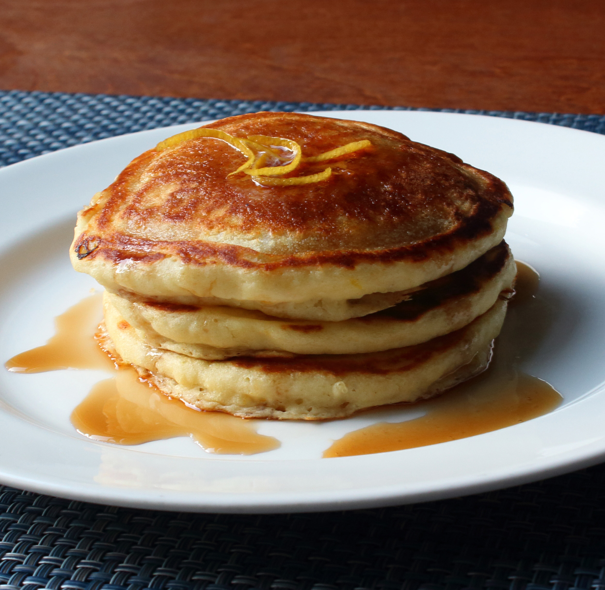

Lemon-Ricotta Pancakes

Lemon Ricotta Pancakes
Ingredients
- ¾ cup cold water or milk
- ½ teaspoon baking soda
- ½ cup ricotta cheese
- 1 tablespoon grated lemon zest (just the yellow part of the skin)
- 1 tablespoon vegetable oil
- 1 tablespoon white sugar
- 1 large egg
- ⅛ teaspoon vanilla extract
- 2 tablespoons melted butter
- 1 tablespoon lemon juice
- 1 cup self-rising flour
- 2 tablespoons self-rising flour
Steps
- Whisk water and baking soda together in a mixing bowl. Add ricotta cheese, lemon zest, vegetables oil, sugar, egg, and vanilla. Whisk until smooth, breaking up lumps of cheese as you mix. Add melted butter, lemon juice, and 1 cup plus 2 tablespoons self-rising flour. Whisk together, stirring until most of flour disappears into the batter.
- Let batter sit at room temperature about 15 minutes.
- Heat lightly greased cast iron skillet or griddle over medium-high heat. Portion out 1/4 cup scoops of batter onto skillet (cook in batches). When bubbles begin to form on the surface and the edges of the pancakes start to look dry (2 to 3 minutes), flip and cook other side until cooked through, 2 to 3 minutes. Transfer to a warm plate.